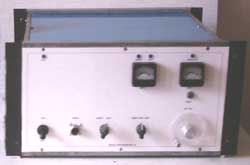
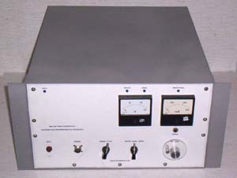
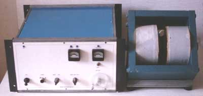
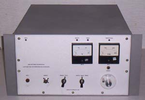
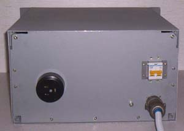
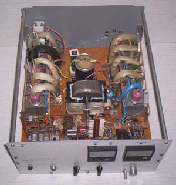

Блок питания
электромагнита регулируемый


Назначение
Блок питания предназначен для получения регулируемого по
величине выпрямленного напряжения с возможностью смены полярности и может
использоваться для питания различных индукторов [1],
электромагнитов [2, 4, 5], соленоидальных систем [3], исполнительных
электродвигателей, других активных и индуктивных нагрузок.
Блок питания построен по схеме мостового выпрямителя с
тринисторным регулятором, подключаемым непосредственно к сети переменного тока.
Для фильтрации выпрямленного напряжения используется LC-фильтр. Смена полярности
выходного напряжения осуществляется с помощью тринисторного инвертора. Блок
питания имеет устройства защиты от перегрузки и блокировки от неправильных
действий оператора. Управление может осуществляться вручную с помощью органов
управления на передней панели или от внешних устройств путем подачи управляющих
сигналов на специальный разъем.
Технические данные:
- питающая сеть однофазная напряжением 220 +
22 В частотой 50 + 2 Гц
- выпрямленное выходное напряжение плавно регулируется в
пределах 0 ... -300 В, 0 ... +300 В (имеется переключатель полярности)
- выходной ток до 25 А при выходном напряжении 220 В
- управление ручное или от внешнего устройства (имеется
переключатель режима)
- прибор имеет принудительное охлаждение (вентилятор),
готов к работе сразу после включения, время непрерывной работы не ограничено
- габаритные размеры не более 400 х 400 х 210 мм3
(без учета элементов подключения и управления)
- масса не более 12.5 кг

Рис. 1. Блок питания с электромагнитом.
Разработана также более мощная версия блока питания
электромагнита. Его характеристики представлены ниже:
- питающая сеть однофазная напряжением 220 +
22 В частотой 50 + 2 Гц
- выпрямленное выходное напряжение плавно регулируется в
пределах 0 ... -250 В, 0 ... +250 В (имеется переключатель полярности)
- выходной ток до 50 А при выходном напряжении 220 В
- управление ручное или от внешнего устройства (имеется
переключатель режима)
- прибор имеет естественное охлаждение, готов к работе
сразу после включения, время непрерывной работы не ограничено
- габаритные размеры: ширина - 440 мм (с учетом уголков -
515 мм), высота - 250 мм, глубина 500 мм (без учета элементов подключения и
управления), корпус предназначен для монтажа в стандартной 19-дюймовой
стойке
- масса не более 25 кг
На рис. 2 - 4 представлен внешний вид более мощной версии
блока питания электромагнита.

Рис. 2. Блок питания электромагнита (вид спереди).

Рис. 3. Блок питания электромагнита (вид сзади).

Рис. 4. Блок питания электромагнита (вид сверху со снятым
кожухом).
Ссылки:
-
Индуктор продольного магнитного поля с рабочей зоной щелевого типа объемом
10 х 110 х 80 куб. мм
- Малогабаритный электромагнит
для получения постоянного однородного магнитного поля с магнитной индукцией
до 1.5 Тл
- Системы колец
Гельмгольца (катушки Гельмгольца)
- Электромагнит для
получения постоянного однородного магнитного поля с индукцией до 1.2 Тл в
зазоре диаметром 80 мм высотой 20 мм
-
Электромагниты. Источники питания электромагнитов
Словарь
терминов:
- Выпрямитель
- электронный прибор, преобразующий переменное напряжение в постоянное.
- Двигатель (мотор) - преобразователь
энергии источника в механическую энергию движения.
- Индуктор - генератор индукции.
- Кольца Гельмгольца - система из двух одинаковых
кольцевых витков с током, расположенных соосно на расстоянии радиуса витка
друг от друга и соединенных между собой последовательно. В центре системы
имеется зона однородного магнитного поля.
- Соленоид
(от греч. solen - трубка и eidos - вид) – осесимметричная катушка индуктивности.
- Тринистор - управляемый несимметричный тиристор:
не проводит ток в обратном направлении, переключается в открытое состояние
импульсами тока управления, а в закрытое состояние - подачей обратного
напряжения или прерыванием тока.
- Электромагнит
- устройство, содержащее катушку индуктивности и магнитный контур (цепь).
16.03.2004
02.09.2005
22.06.2010
29.08.2012
19.06.2013
28.06.2018
Альтернативные источники
энергии
Компьютеры и
Интернет
Магнитные поля
Механотронные системы
Перспективные
разработки
Электроника и
технология
Главная страница